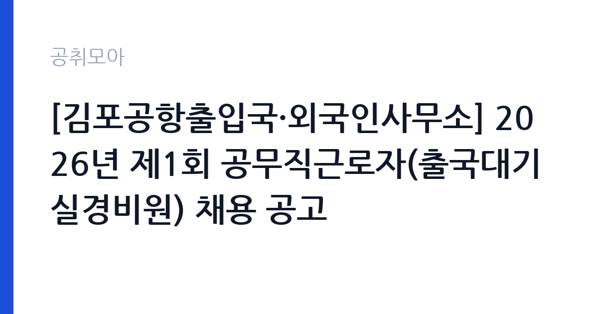

[국가기관] [김포공항출입국·외국인사무소] 2026년 제1회 공무직근로자(출국대기실경비원) 채용 공고
법무부 김포공항출입국.외국인사무소 · 서울 · 마감 2026-10-19 (D-10) · 출처 나라일터

한눈에 보는 모집 조건
| 기관 | 법무부 김포공항출입국.외국인사무소 |
|---|---|
| 공고명 | [김포공항출입국·외국인사무소] 2026년 제1회 공무직근로자(출국대기실경비원) 채용 공고 |
| 고용형태 | 공무직 |
| 근무지 | 서울 |
| 게시일 | 2026-10-09 |
| 마감일 | 2026-10-19 (D-10) |
지원자격, 이렇게 읽으세요
- 공무직(출국대기실경비원) 1명
- 접수 ~2026-10-19 마감
- 세부 조건은 원문 공고문 확인
공고문의 응시자격은 원문 붙임에서 확인해야 합니다. 출국대기실경비원은 법무부 출입국기관의 보호·대기 시설을 지키는 자리라, 통상 만 18세 이상과 공무원임용 결격사유 비해당이 기본 조건이 됩니다. 경비업법상 경비지도사 자격증이나 무도 단증, 군·경찰 경력 같은 보안 실무 이력이 있으면 서류에서 유리하게 작용합니다. 자격증이 필수는 아닐 가능성이 높으니, 원문의 응시자격과 우대사항을 줄 단위로 대조하는 것이 출발점입니다.
이 공고의 포인트
이 공고의 관전 포인트는 두 가지입니다. 첫째, 작년(2025년) 같은 직무가 기간제로 뽑혔는데 이번에는 공무직으로 나왔다는 점입니다. 기간제에서 공무직으로 바뀐 자리는 정년 보장과 무기계약이라는 구조적 이점이 생긴 것이니 가치가 높습니다. 둘째, 근무지가 김포공항 인근 서울이라는 점입니다. 출입국기관 경비 경력은 이후 공항·공공기관 보안직 지원 때 실무 경력으로 이어집니다. 보안 분야 장기 근무를 생각한다면 우선순위를 맨 위로 올려도 됩니다.
전형은 어떻게 진행되나
전형은 서류심사로 시작해 면접심사로 끝나는 구조가 유력합니다. 2025년 같은 직무(기간제) 채용도 서류전형 합격자 발표 뒤 면접시험을 치렀습니다. 접수기간이 10월 13일부터 19일까지로 일주일이며, 우편접수는 마감일 도착분까지만 인정되는 방식이 일반적이니 최소 이틀 전에는 발송하십시오. 방문접수는 평일 근무시간 내에만 가능할 수 있으니 출발 전에 문의처(02-2664-8026)로 접수시간을 확인하시기 바랍니다.
원문에서 확인한 전형 방식
ㅇ 모집분야 : 출국대기실경비원 ㅇ 고용형태 : 공무직 ㅇ 접수기간 : 2026년 10월 13일 ~ 2026년 10월 19일 ㅇ 응시방법 : 우편접수 또는 방문접수 ㅇ 문의처 : 02-2664-8026
이런 분께 추천해요
- 서울 강서·양천·마포 인근 거주로 김포공항 통근이 가능한 분 — 출퇴근 안정성이 장기 근무의 조건입니다
- 경비·보안·군·경찰 관련 경력이나 자격을 가진 분 — 실무 이력이 서류와 면접의 무기가 됩니다
- 10월 19일 안에 우편·방문 접수를 마칠 수 있는 분 — 접수 첫날(10월 13일)부터 서두르는 것이 안전합니다
지원 전 체크리스트
- 원문 공고문의 응시자격·우대사항을 줄 단위로 대조했는가 — 자격증 가점이 서류를 가릅니다
- 우편접수 마감 기준(도착분 인정 여부)을 확인했는가 — 소인 기준이 아닐 수 있으니 미리 발송하십시오
- 신원조회·결격사유에 해당하지 않는가 — 보안 직무라 신원 검증이 엄격합니다
- 문의처(02-2664-8026)로 방문접수 가능 시간을 확인했는가 — 평일 근무시간 외 접수는 불가할 수 있습니다
모집 일정과 제출 타이밍
이번 공고의 접수기간은 2026년 10월 13일부터 10월 19일까지입니다. 권장 스케줄은 이렇습니다. 10월 12일까지 원문 공고문과 제출서류 목록을 확보하고, 13일 접수 시작과 동시에 방문 또는 우편으로 접수한 뒤, 15일까지 접수 확인 전화를 마치십시오. 서류전형 합격자 발표는 접수 마감 후 일주일 안팎이 유력하며, 면접은 10월 하순에 치러질 가능성이 높습니다. 발표일은 법무부 홈페이지와 나라일터에서 직접 확인하시기 바랍니다.
직무 이해하기: 국가기관
출국대기실경비원은 강제퇴거 대상자나 출국 유예 외국인이 일시 대기하는 출국대기실의 경비와 질서유지를 맡습니다. 출입자 통제와 순찰, 시설 보안점검, 비상상황 발생 시 초동 대응이 핵심 업무입니다. 김포공항출입국·외국인사무소는 출입국심사와 외국인 체류관리, 난민·국적 업무를 수행하는 법무부 소속 기관으로, 경비원은 심사·보호 현장의 안전을 뒷받침하는 역할을 합니다. 교대근무나 야간·휴일 근무가 포함될 수 있으니 원문의 근무조건을 반드시 확인하십시오.
자기소개서 작성 팁
출국대기실경비원 지원서의 핵심은 보안 실무 적합성입니다. 첫 문단에는 출입국기관 경비라는 특수한 현장을 택한 이유를 한 줄로 선언하십시오. 본론에는 경비·순찰·출입통제 경험을 장소와 기간, 담당 인원 규모와 함께 구체적으로 서술하십시오. 숫자가 들어간 서술이 좋습니다. 예를 들어 담당 구역 면적, 일일 출입자 수, 비상상황 대응 건수 같은 수치를 적는 것입니다. 마무리는 입사 후 대기실 질서유지와 이용자 안전에 기여하겠다는 각오로 닫으십시오. 외국어 가능자는 응대 경험을 덧붙이면 좋습니다.
면접 준비 포인트
출입국기관 경비직 면접은 상황 대응 질문이 중심입니다. 대기실 내 소란이나 자해 시도 같은 비상상황에서 어떻게 초동 대응할 것인지, 출입통제 원칙을 어떻게 지킬 것인지를 설명할 수 있게 연습하십시오. 면접관이 이전 직장에서 가장 긴박했던 보안 상황을 물으면 실제 사례를 들어 답하는 것이 좋습니다. 복장은 단정하게, 질문에는 결론부터 말하는 것이 기본입니다. 김포공항출입국·외국인사무소가 무슨 일을 하는 기관인지 한 줄로 말할 수 있게 준비하고 가십시오.
급여·근무조건 읽는 법
급여는 원문 공고문의 보수 조건에서 확인하시기 바랍니다. 법무부 소속 공무직의 보수는 법무부 공무직 보수지침에 따라 정해지며, 기본급에 상여금과 각종 수당이 별도로 붙는 구조입니다. 같은 직무의 2025년 기간제 채용 때는 별도 연봉 테이블이 공개되지 않았으니, 이번 공무직 공고의 보수표도 원문 붙임에서 직접 확인하십시오. 공무직은 정년(만 60세)이 보장되는 무기계약 신분이라 4대 보험과 퇴직금이 적용됩니다. 실수령액은 호봉·수당 구성에 따라 달라지니 수치 추정은 하지 않습니다.
자주 묻는 질문
- 출국대기실은 어떤 곳인가요?
강제퇴거 대상자나 출국이 유예된 외국인이 출국 전까지 일시 대기하는 시설입니다. 경비원은 이 시설의 출입통제와 순찰, 질서유지를 맡으며, 일반 공항 경비와 달리 보호·대기 외국인을 직접 상대하는 특수성이 있습니다. - 공무직과 기간제의 차이가 무엇인가요?
공무직은 기간의 정함이 없는 무기계약으로 정년이 보장되는 신분이고, 기간제는 계약기간이 정해진 한시 신분입니다. 같은 직무라도 공무직 공고가 장기 안정성에서는 분명히 유리합니다. - 접수는 어떻게 하나요?
2026년 10월 13일부터 10월 19일까지 우편접수 또는 방문접수로 진행됩니다. 인터넷 접수는 없으니 서류를 미리 준비하시고, 우편은 마감일 도착분 기준일 수 있어 여유 있게 발송하시기 바랍니다.
함께 보면 좋은 공고
[국가기관] 선봉대 체력단련장(육군골프장) 공무직근로자 (조리담당) 채용공고 제2026-13호 — 마감 2026-10-26[국가기관] [국립군산대학교]국립대학육성사업 기간제 계약직원(선임연구원) 채용 재공고 — 마감 2026-10-15[국가기관] 26년 서초경찰서 무기계약직 근로자[시설관리] 채용 공고문[제 2026-4호] — 마감 2026-10-19출처: 나라일터 공개정보를 바탕으로 공취모아가 정리한 안내글입니다. 모집 조건·일정은 변경될 수 있으니 지원 전 반드시 원문 공고문을 확인하세요. 본 글은 정보 제공용이며 합격을 보장하지 않습니다.